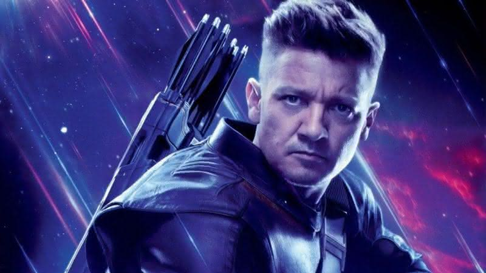
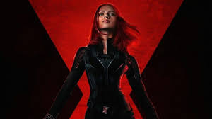
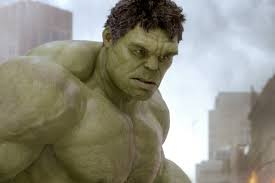

A história do Homem de Ferro, também conhecido como Tony Stark, começa com um playboy bilionário e gênio da tecnologia que, após ser sequestrado e gravemente ferido, constrói uma armadura de alta tecnologia para escapar. Essa experiência o leva a repensar suas prioridades e a usar sua inteligência e recursos para combater o crime e proteger o mundo como o super-herói Homem de Ferro.
O Capitão América, também conhecido como Steve Rogers, é um super-herói dos quadrinhos e do Universo Cinematográfico Marvel (MCU). Ele é um patriota americano que, durante a Segunda Guerra Mundial, foi transformado em um supersoldado por meio de um experimento. Após ser congelado e descongelado no futuro, ele se junta aos Vingadores e se torna um símbolo de liberdade e justiça.
Thor, na mitologia nórdica, é o deus do trovão, conhecido por sua força, bravura e proteção contra os gigantes. Ele é filho de Odin e Jord, e marido de Sif. Na mitologia, ele é frequentemente retratado com um martelo mágico chamado Mjölnir, que o ajuda a controlar trovões e relâmpagos. No universo Marvel, Thor é um dos personagens principais, um super-herói com poderes semelhantes aos da mitologia, que luta ao lado dos Vingadores para proteger a Terra.

No primeiro filme dos Vingadores (2012), Clint Barton, o Gavião Arqueiro, tem sua mente controlada por Loki e se torna seu aliado no ataque à SHIELD, roubando o Tesseract. Ele enfrenta os outros Vingadores no aeroporta-aviões, mas é restaurado à sua consciência após um confronto com a Viúva Negra. Em seguida, ele se junta à equipe para lutar contra Loki e os Chitauri, ajudando a defender a Terra e impedir a conquista de Thanos.

No filme "Os Vingadores" (2012), a Viúva Negra, interpretada por Scarlett Johansson, já é uma agente da S.H.I.E.L.D. e membro dos Vingadores. Seu papel no filme se concentra em ajudar a equipe a lutar contra Loki e seu exército, usando suas habilidades de espionagem, combate e inteligência. No filme, ela se destaca por sua habilidade em manipular Loki, usando suas próprias palavras para enganá-lo e levá-lo a revelar seus planos, além de ajudar a equipe em diversas missões de combate.

Em "Os Vingadores" (2012), Bruce Banner, o Hulk, é recrutado pela S.H.I.E.L.D. para ajudar a deter Loki e os Chitauri, uma raça alienígena invasora, que buscam conquistar a Terra. Ele se junta a Homem de Ferro, Capitão América, Thor, Viúva Negra e Gavião Arqueiro, formando os Vingadores. O filme explora o lado mais heroico e controlado de Hulk, com cenas icônicas como a luta contra Loki e a defesa de Nova Iorque.